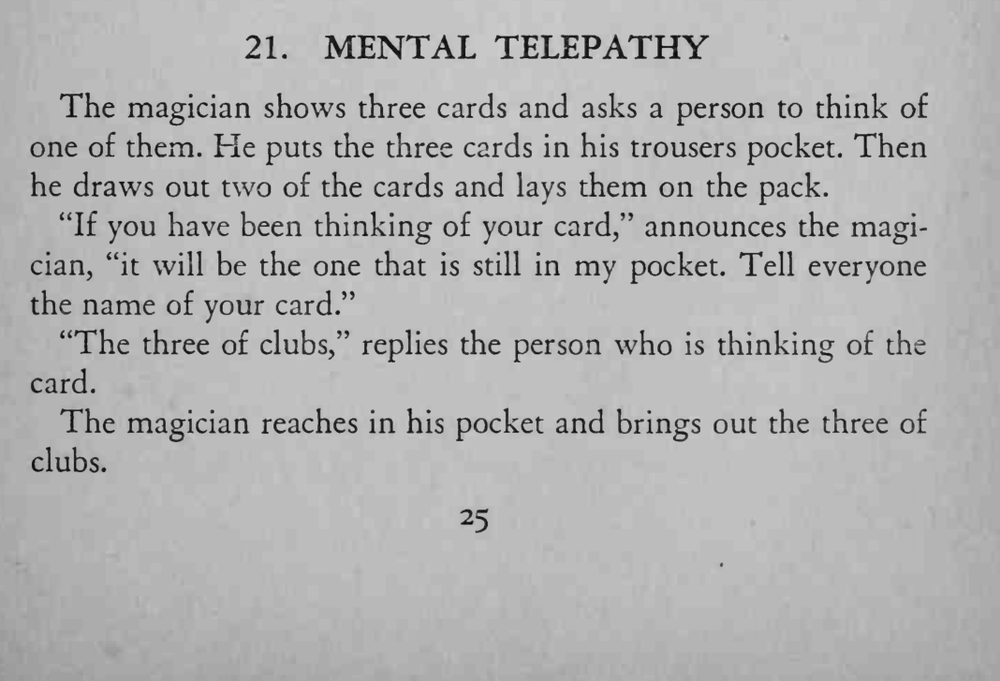
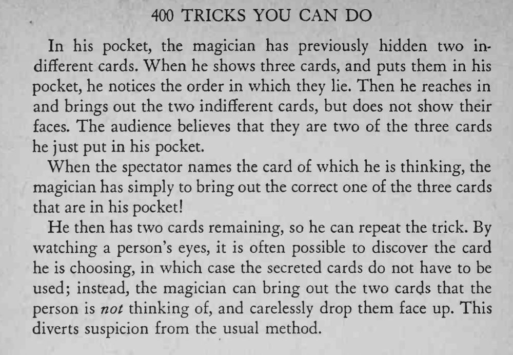

观众从三张牌里默想一张，魔术师把牌收进口袋，再取出两张放在牌堆上；观众说出所想的牌名后，魔术师从口袋里取出的正是那张。
取出的两张杂牌不能亮出牌面，一露就穿帮。


The magician shows three cards and asks a person to think of one of them. He puts the three cards in his trousers pocket. Then he draws out two of the cards and lays them on the pack. "If you have been thinking of your card," announces the magician, "it will be the one that is still in my pocket. Tell everyone the name of your card." "The three of clubs," replies the person who is thinking of the card. The magician reaches in his pocket and brings out the three of clubs. In his pocket, the magician has previously hidden two indifferent cards. When he shows three cards, and puts them in his pocket, he notices the order in which they lie. Then he reaches in and brings out the two indifferent cards, but does not show their faces. The audience believes that they are two of the three cards he just put in his pocket. When the spectator names the card of which he is thinking, the magician has simply to bring out the correct one of the three cards that are in his pocket! He then has two cards remaining, so he can repeat the trick. By watching a person's eyes, it is often possible to discover the card he is choosing, in which case the secreted cards do not have to be used; instead, the magician can bring out the two cards that the person is not thinking of, and carelessly drop them face up. This diverts suspicion from the usual method.